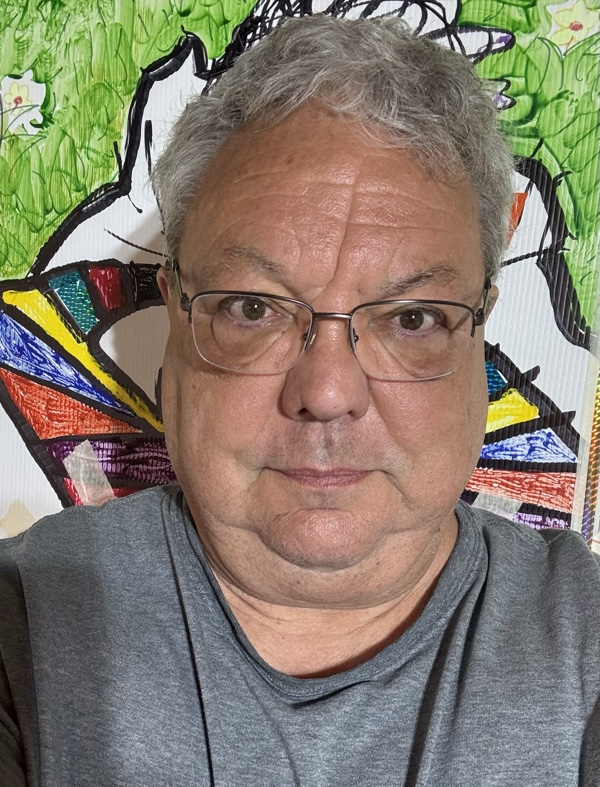

Jeffrey
F. S. Neumann
Art doesn't ask for approval — it demands attention.
Five decades refusing to play safe. The practice spans collage, sculpture, and photography — drawing on found imagery, industrial material, and the accumulated visual language of popular culture, assembled into compositions that hold tension between documentation and invention, memory and surface.
This archive is both personal museum and working studio: 1,084 works spanning 1974 to the present. An estimated 500–1,000 additional pieces were lost to water damage in storage — undocumented, unrecovered.
Based in Cleveland, Ohio. BFA in Industrial Design, Cleveland Institute of Art.

Contact
jeff@jfsn.com
jfsn.com
Exhibitions, acquisitions, press
Archive
1,084 works
1974 – present
Series
| Series | Count |
|---|---|
| Studio Images | — |
| Guernica Inspired | — |
| Framed Pieces | — |
| Art School Work | — |
| Mr. SNOWmann | — |
| Torsos & Faces | — |
| Tracings | — |
| Gallery Images | — |
| XXIII | — |
| Squadron | — |
| Guernica Series | — |
By Decade
Now
Archiving and digitizing fifty years of studio work — 1,084 pieces documented and counting. Surfacing patterns across decades that weren't visible until everything was in one place.
Still making new work. Still Cleveland.
Earlier Art Sites
Mr. SNOWmann — dedicated site, 2015
Fine Art 2000 — packages, CDs, targets & lights
jfsn.com 2023 — art section
Earlier Design Work
jfsn.com 2023 — UX/UI design portfolio
jfsn.com 2014 — product design portfolio
jfsn.com has been running since ~1990 — this is approximately the 30th version of the site.